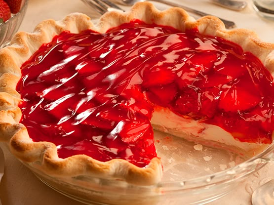
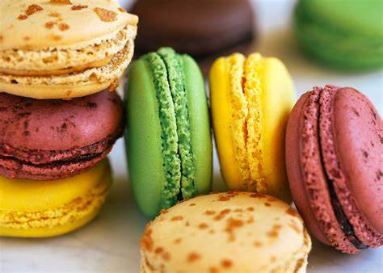
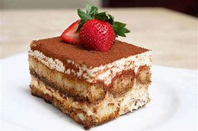
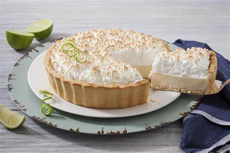
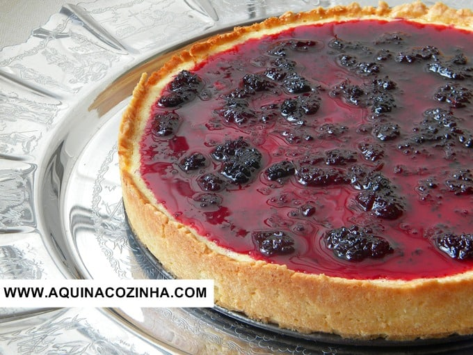
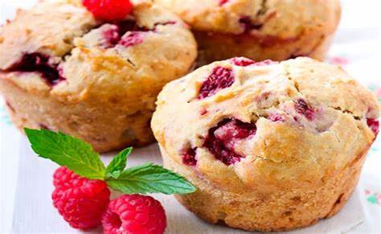
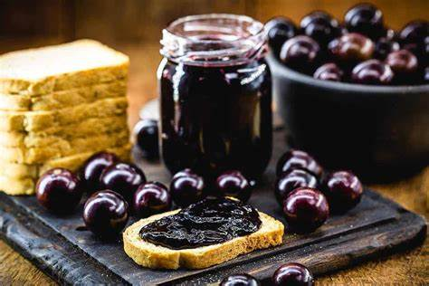
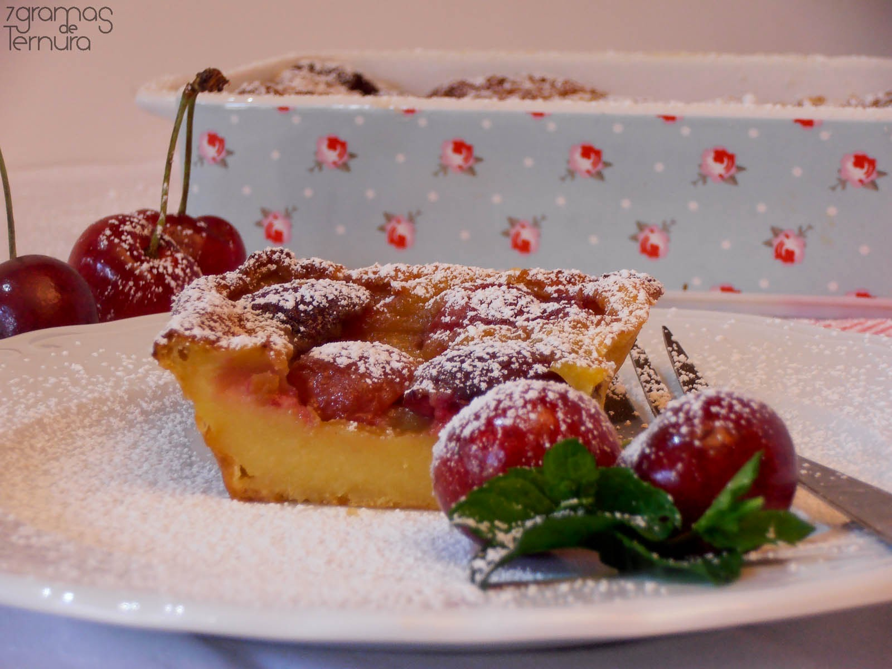

Bolo de Chocolate
Ver receita

Torta de Morango
Ver receita
Cookie
Ver receita

Macaron
Ver receita

Tiramisu
Ver receita

Torta de Limão
Ver receita

Cheesecake de Amora
Ver receita

Muffin de Framboesa
Ver receita

Geleia de Uva
Ver receita

Clafoutis de Cereja
Ver receita
Compartilhe Conosco